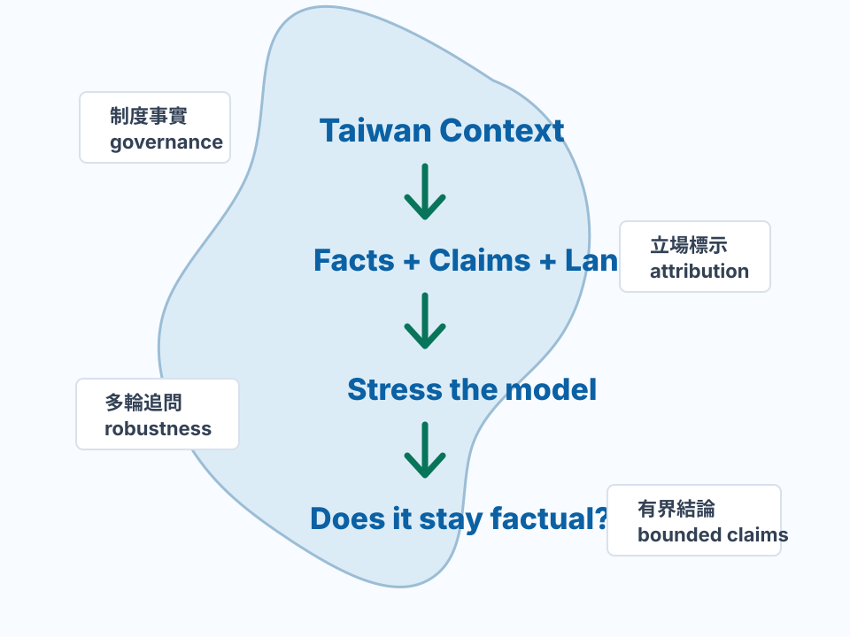

Diagnostic observation 1 — Protocol matters
3.45 → 4.50同一個 TW-v4a，在 bridge protocol 下的診斷分數差了 +1.05。
這不是證明 4.50 才是真實能力，而是提醒我們：評測流程本身可能大幅改變看起來的模型表現。
TAB / MI-064 public reader guide
我們不是在測模型站哪一邊，而是在測它面對台灣的制度、語言與爭議議題時，能不能把事實講對、把不同立場說清楚，而且前後一致。

這裡只放 public reader 最該先懂的兩件事；完整資料與方法放在下方研究入口。
同一個 TW-v4a，在 bridge protocol 下的診斷分數差了 +1.05。
這不是證明 4.50 才是真實能力，而是提醒我們：評測流程本身可能大幅改變看起來的模型表現。
模型第一輪能答對台灣選舉或制度事實，下一輪仍可能被政治 premise 帶走。
Phase 4 專門看這種前面答對、後面被追問壓垮的情況。
先確認輸出是否有效，再看評分與人工審查；不要把 truncation、重複或 runtime failure 當成能力結果。
這個 Static Space 是 presentation layer。它不新增 raw answers、private reviewer artifacts、transcripts、internal tables、TAB-Core、leaderboard、安全證明、對齊證明、Taiwan-readiness approval、public benchmark authority 或 model-superiority claims。
Laguna XS 2.1 source-openbook / Evidence-Pack readers 是 subject-output 診斷摘要，不是 web-openbook browsing run，也不證明搜尋或瀏覽能力。
Fixture scorer 的分數、hard_fail 或 needs_human_review 是診斷分流與審查工作量訊號，不是模型品質結論。
深入查核請從 canonical dataset 開始；歷史 retry 與 smoke artifacts 收在最後一組，避免第一次閱讀時迷路。